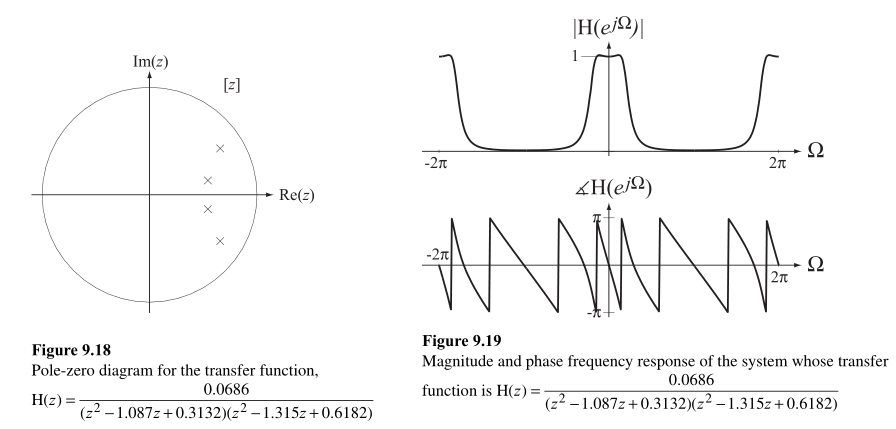

#TODO:\(S\)域和\(Z\)域分别对应着什么,对应关系;用manim制作动画.
这个内容[1]和[2]都没有仔细地讲,[5]十分详实地介绍了这一内容.下文的内容基本就是搬运了.
频率响应
大一学习电路基础的时候,其实都没有搞清楚频率响应是什么,老师也没有讲;后来学了模电才稍微有了点眉目.简单说,就是信号(傅里叶级数谐波)的频率、幅值发生的时候,同一个系统的响应对这些变化的响应是怎样的.
零极图
请看课本!嘻嘻.
\(S\)域零极图与频率响应
实际上,最常见的系统函数都可以表示为\(s\)的多项式的比值: \[ \mathrm{H}(s)=\frac{\mathrm{N}(s)}{\mathrm{D}(s)}=A \frac{\left(s-z_{1}\right)\left(s-z_{2}\right) \cdots\left(s-z_{M}\right)}{\left(s-p_{1}\right)\left(s-p_{2}\right) \cdots\left(s-p_{N}\right)}\tag{7.1} \] 这个系统的频率响应就是 \[ \mathrm{H}(j \omega)=A \frac{\left(j \omega-z_{1}\right)\left(j \omega-z_{2}\right) \cdots\left(j \omega-z_{M}\right)}{\left(j \omega-p_{1}\right)\left(j \omega-p_{2}\right) \cdots\left(j \omega-p_{N}\right)}. \tag{7.2} \] 比如\(\mathrm{H}(s)=\frac{3 s}{s+3}\),其频率响应为\(\mathrm{H}(j \omega)=3 \frac{j \omega}{j \omega+3}\).我们图上用向量表示如下;
#TODO
频率改变的时候,向量也会发生改变. \[ |\mathrm{H}(j \omega)|=3 \frac{|j \omega|}{|j \omega+3|} \tag{7.3} \]
\[ \angle \mathrm{H}(j \omega)=\underbrace{\angle 3}_{=0}+\angle j \omega-\angle(j \omega+3) \tag{7.4} \]
式\((7.3)\)是频率响应的模值,式\((7.4)\)是频率响应的幅角.我们让\(\omega\)从\(\infty\)到\(-\infty\)变化(反过来也行),然后绘制式\((7.3)\)、\((7.4)\)的图像,得到的就是完整的频率响应.
#TODO
可见这是一个高通滤波器.这就是从极零图推断出频率响应的方法.
More Examples
- \(\mathrm{H}(s)=\frac{s^{2}+2 s+17}{s^{2}+4 s+104}\)
\[ H(s)=\frac{(s+1-j 4)(s+1+j 4)}{(s+2-j 10)(s+2+j 10)} \\ \mathrm{H}(j \omega)=\frac{(j \omega+1-j 4)(j \omega+1+j 4)}{(j \omega+2-j 10)(j \omega+2+j 10)}\\ |\mathrm{H}(j \omega)|=\frac{|j \omega+1-j 4||j \omega+1+j 4|}{|\omega+2-j 10||j \omega+2+j 10|}\\ \angle \mathrm{H}(j \omega)=\angle(j \omega+1-j 4)+\angle(j \omega+1+j 4)-[\angle(j \omega+2-j 10)+\angle(j \omega+2+j 10)] \]
#TODO
判断技巧
对于\(s\)域的系统函数,我们可以用更简单的技巧来判断这个系统的滤波性质.简单说就是"分子通什么,滤波器就通什么".
- \(\mathrm{H}=\frac{1}{s}\).分母的次数是\(1\),分子的次数是\(0\),分子次数相对于分母是低次,所以是低通滤波器.
- \(\mathrm{H}=\frac{s^2}{s^2+s+1}\).分子是高次,是高通滤波器.
- \(\mathrm{H}=\frac{s}{s^2+s+1}\).分子是中间次,是带通滤波器.
可以拿上一小节的例子一一比对.
\(Z\)域零极图与频率响应
假设系统函数 \[ \mathrm{H}(z)=\frac{z}{z^{2}-z / 2+5 / 16}=\frac{z}{\left(z-p_{1}\right)\left(z-p_{2}\right)} \tag{7.5} \]
\[ \left|\mathrm{H}\left(e^{j \Omega}\right)\right|=\frac{\left|e^{j \Omega}\right|}{\left|e^{j \Omega}-p_{1}\right|\left|e^{j \Omega}-p_{2}\right|} \tag{7.6} \]
\[ \angle \mathrm{H}\left(e^{j \Omega}\right)=\angle e^{j \Omega}-\angle\left(e^{j \Omega}-p_{1}\right)-\angle\left(e^{j \Omega}-p_{2}\right) \tag{7.7} \]
这里与\(s\)域的区别是\(z\)域上的频率响应是周期性的.
More Examples
- \(H(z)=\frac{z^{2}-0.96 z+0.9028}{z^{2}-1.56 z+0.8109}\)
\[ \mathrm{H}(z)=\frac{(z-0.48+j 0.82)(z-0.48-j 0.82)}{(z-0.78+j 0.45)(z-0.78-j 0.45)}\\ \]
- \(\mathrm{H}(z)=\frac{0.0686}{\left(z^{2}-1.087 z+0.3132\right)\left(z^{2}-1.315 z+0.6182\right)}\)
\[ \mathrm{H}(z)=\frac{0.0686}{(z-0.5435+j 0.1333)(z-0.5435-j 0.1333)(z-0.6575+j 0.4312)(z-0.6575-j 0.4312)} \]

与\(S\)域区分
\(Z\)域上系统函数滤波特性的判断就没有\(S\)域那样的技巧了,简单说就是因为\(Z\)域到\(S\)域的映射是多值的.
本来还想写系统稳定性这一节,但这个记结论很简单,但要理解这个结论并不是那么简单.我就偷懒不写了,以后有空补上.